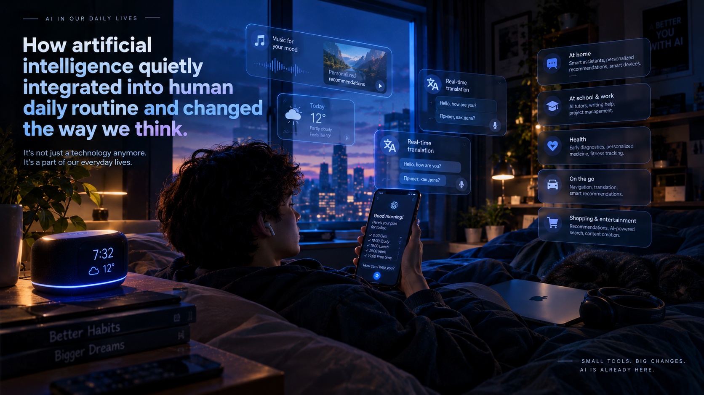
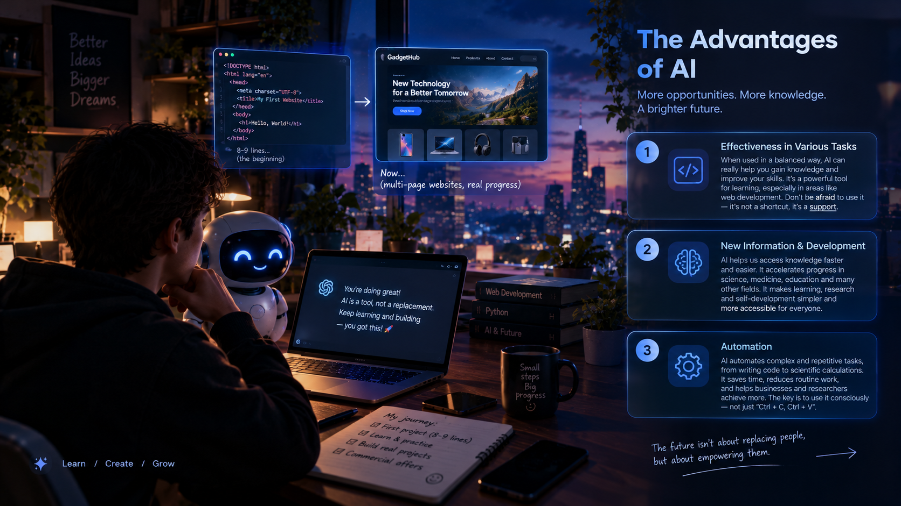
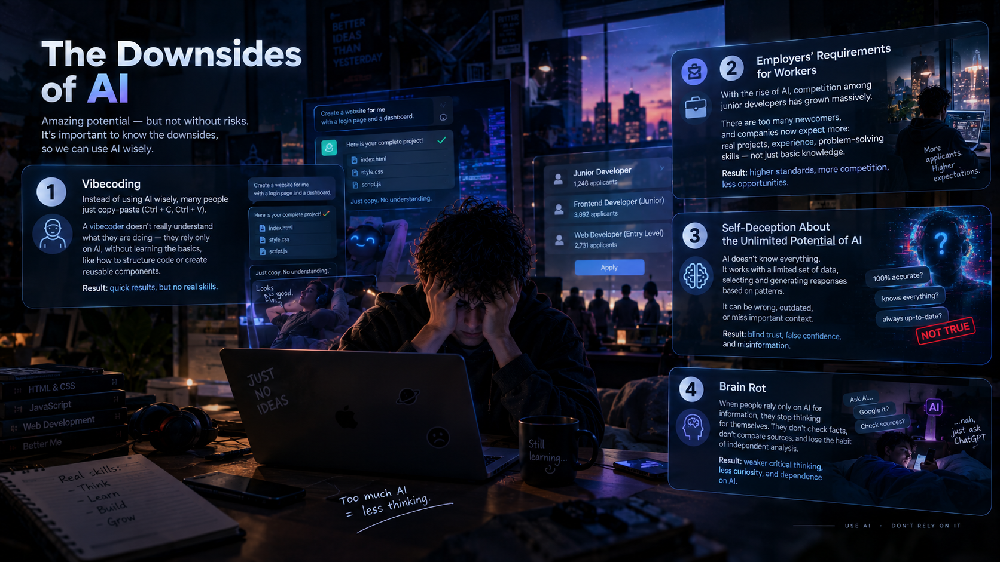
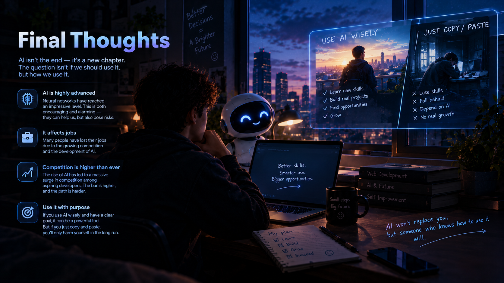

How artificial intelligence quietly integrated into human daily routine and changed the way we think.
Scroll down 🡫
Today, artificial intelligence has increased its role in human life. If you think about it, you can understand how significant an impact AI has in our time: creating websites, various web applications, mobile applications, and even games — all of this can already be done by a neural network with just a dozen prompts. But, of course, not everything is as great as it’s written online. Most of these tasks are within the capabilities of various neural networks, but only paid ones. If you’re an ordinary user or a beginner developer of various types of content, you’ll most likely be using a free subscription. However, the free version of AI also has quite good creative capabilities. There are many pros and cons to using them, but let’s look at the pros: 1. Effectiveness in various tasks when used in a balanced way. If you approach neural networks in the right way, you can really gain a decent amount of knowledge. For example, you might be a beginner in the field of web development. I, as the author of this website, am a junior developer myself — though judging by knowledge rather than experience, I’m already ready to move on to commercial offers. My journey started with projects with 8-9 lines of code and were ridiculous. Now, as you can see, I'm getting good multi-page websites with a good style.| I'm still struggling with deceptive thoughts like, "You're using AI to develop your website again. Don't you know how to do it? It's basic logic." That's the problem. After all, we are trying from the very beginning to use our little knowledge in development, even without AI. Tip: don’t be afraid to use artificial intelligence, no matter what level of programmer you are. Experienced workers have known this for a long time and don’t worry about it at all, but for an inexperienced developer, it’s always difficult. 2. Acquiring new information and overall development. No matter what anyone says, a lot has changed with the advent of AI. Humanity is moving forward and doesn’t want to stop. Medicine and many other sciences have begun to gain momentum in their development. It has become easier for people to acquire information in general, without having to struggle with finding and fixing errors in various tasks. It has become much easier to learn the language you need, to engage in IT development, and MUCH more. 3. Automation. This point is superficially related to the second point. But it touches on a slightly different topic. Nowadays, large companies won’t have to create projects with hundreds, or even thousands, of lines of code. This also works with scientific research — instead of lengthy calculations, the AI will explain and provide examples for a given task. If you take these points into account and stick to only these points, then artificial intelligence is the ideal option for various issues or for creating the necessary programs. The main thing is not to cross the line between conscious use and the use of the four keys “Ctrl +C, Ctrl +V”.

Now, I think it’s worth moving on to the downsides. Perhaps, as you read this information, you’ll see your everyday self here. 1. Vibecoding. The first point will be the most acute and challenging to start with, but it’s also a term that’s quite common in our lives. A “vibecoder” is a person (a developer or someone responsible for a specific task) who, instead of using AI wisely, simply uses the key combinations I mentioned in the Pros category (Ctrl+C, Ctrl+V). As I said, neural networks are already capable of creating a game based on a precise description of what is desired. But people have forgotten that it needs to be used wisely, not just taken from AI. The downside of these vibe coders is that most of them don’t even know how to create a block within which certain elements will be defined and with which you can interact during the process. This is just an example from web development, and there are plenty of such developments nowadays.2. Employers’ requirements for workers. This is also one of the challenging nuances for developers in 2026. In addition to the development of AI, there is fierce competition among junior developers. The programming market has exceeded all possible figures. The consequences of this are also unpleasant, ranging from the fact that there are so many newcomers like you to the developed thinking of AI. 3. Self‑deception about the unlimited potential of AI. I believe this is a global deception perpetrated by the creators of artificial intelligence. Over time, we’ve been led to believe that AI is a tool that literally knows EVERYTHING. Although, if you have even the slightest logical thinking ability, you can understand that it has a certain database, based on which it selects words tailored to a specific user. There aren’t many neural networks that even exist that have the ability to check how up‑to‑date the information taken from the internet is and sort it. This is the main problem — companies immediately inform users not to trust AI 100 %, since it has a lot of information but cannot interact with specific and necessary data.. 4. Brain rot. By brain rot, I mean people who use only AI to find new information or clarify old information. The thing is that, as I said earlier, AI has a certain set of data, but it cannot sort it by relevance. And the person who doesn’t just look for information on Google or another search engine and doesn’t verify it eventually loses the ability to think for themselves. You can check this yourself by first going to a neural network and asking any question, and then asking the same question on the internet. You can immediately feel the difference.

Well, I think it’s worth drawing a proper conclusion on this topic. In our time, artificial intelligence and neural networks have become incredibly advanced. This development can be both encouraging and alarming, depending on how we look at it. On the one hand, AI has opened up enormous opportunities for humanity. It has made learning easier, accelerated many working processes, helped people solve complicated problems, and allowed even beginners to create things that previously required years of experience. On the other hand, we cannot ignore the negative consequences that have appeared alongside these achievements. One of the biggest concerns is the growing competition in the job market. As artificial intelligence continues to develop, many companies are changing their requirements for employees. Some tasks that previously required several specialists can now be partially automated or completed with the assistance of AI. This creates additional difficulties for people who are only beginning their careers, especially junior developers and other newcomers to the IT industry. They now have to compete not only with experienced professionals but also with people who know how to use AI effectively. Unfortunately, this situation makes entering the professional world considerably more challenging. However, I don't believe that artificial intelligence should be considered an enemy of humanity or something that we must avoid at all costs. Quite the opposite: if you approach it intelligently, with a clear purpose and a willingness to learn, it can become one of the most useful tools in your everyday life. It can help you understand difficult topics, improve your skills, generate new ideas, and save a considerable amount of time. The important thing is to remember that AI should support your thinking rather than replace it. I would also like to emphasize that using artificial intelligence does not automatically make someone less skilled or less capable. For example, a beginner developer who asks AI to explain a piece of JavaScript code, studies the answer, experiments with it, and eventually learns to write that code independently is actually using the technology in a productive way. Meanwhile, someone who simply copies hundreds of lines of generated code without understanding what they are doing might create an impressive-looking project, but they will struggle when something breaks or when they need to build something independently. Ultimately, the future of artificial intelligence depends not only on the technology itself but also on the decisions people make when using it. We should not blindly trust every answer it provides, nor should we underestimate its capabilities. A reasonable balance between independent thinking, personal experience, traditional learning, and AI assistance is probably the best approach we can take today. My final thought is simple: artificial intelligence is an incredibly powerful instrument, but it should remain an instrument. Don't allow it to think instead of you. Use it to become more knowledgeable, more productive, and more creative. After all, the real achievement is not getting an AI to do everything for you — it is learning how to do things better with its help.